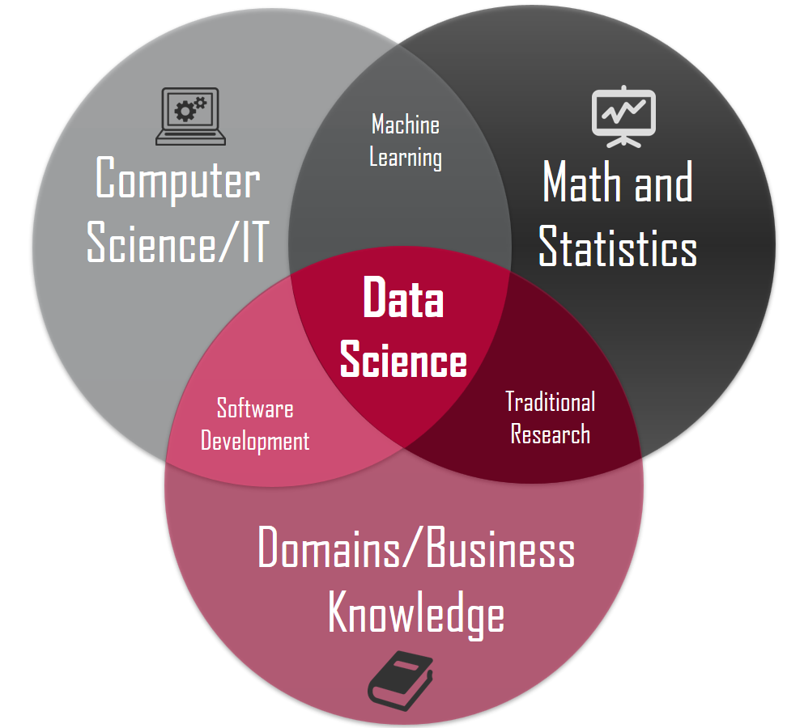
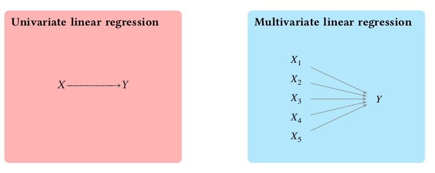
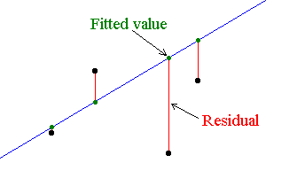

- Introduction of organisers
- What is Data Science?
- Today's topic: Linear Regression
- Training in R
- Training in Python
- Q&A and suggestions for future sessions
- End of session
Finlad-Uganda Data science Meetup
Myriam Munezero, Joshua Olayemi and Richard Ngamita
Think Africa, Enpse Group, KampalR
Plan for today
Introduction of hosts
 Think Africa Ry
Think Africa Ry
Myriam Munezero:
- Director of Operations at Think Africa
- Post-doctoral researcher at University of Helsinki
- Website http://myriammunezero.com/
Joshua Olayemi: Founder and CEO at Enpse Group
Introduction of hosts cont...
KampalR
- Richard Ngamita: Founder at KampalR user group
Why Data Science?

What is Data Science?

Aim of these trainings
Develop hands-on skills on basic essential approaches in data science
Encourage collaboration between Finland and African countries, and
Work on problems that are particular to Africa
#FiUgDataMeetup
Structure of these trainings
4 trainings in 2018:
Linear regression (R & Python)
Data collection, cleaning, exploration, and visualization (R) ~ June
Supervised and Unsupervised classification (R) ~ August
Neural Networks (R) ~ October
A "Graduation" ~ November
Some practicalities
The slides and other learning materials will be made available on https://github.com/mdoucem/Fin-Ug-Datascience-Meetup
Course slides include extra reading matierials - lots of things to learn!
Why R and Python
Both excelent for data science
- Free
- Compehensive set of packages for
- Data access
- Data cleaning
- Analysis
- Data reporting
- Good development environments
- Amazing ecosystem of developers and
- Packages are easy to install
For a good discussion of R vs. Python for data science https://www.kdnuggets.com/2015/05/r-vs-python-data-science.html.
Today's topic - Linear Regression
Regression is probably the most fundamental topic for the data scientist.
A data scientist well versed in regression models will be able to solve an incredible array of problems.
Regression models are the workhorse of data science. They are the most well described, practical and theoretically understood models in statistics.
Regression terminology
There is a dependent variable \(Y\) - The Criterion variable
Vaiables \(X\) it depends on - the independent variable or the predictor variable or features
As an example
## X Y
## 1 4 2
## 2 4 10
## 3 7 4
## 4 7 22
## 5 8 16
## 6 9 10
Regression terminology cont...
Linear regression -> finding the best-fitting straight line through a set of points.
- The best-fitting line is called a regression line: Mathematically generalized as: \[Y_i = \beta_0 + \beta_1 X_i\],
- where \(\beta_{1}\) is the Intercept, and \(\beta_{2}\) is the Slope i.e., coeffiecients or parameters that we want to estimate.
Regression terminology cont...
The resulting line, models the relationship between Y and X
- Upward trend
- Downward trend
- Y does not depend on X

Regression terminology cont...
Used to the estimate the value of Y, when only the predictors (X) values are known.
- 'Simple' when X is only one variable
- 'Bivariate' and 'Multivariate' when X has two and many variables respectively

Regression terminology cont...
Evaluating how good it is
- Looking at our formula again: \[Y_i = \beta_0 + \beta_1 X_i + \epsilon_{i}\],
- Objective is to minimize the \(\epsilon_{i}\) -> the difference between our observations and the predictors made by our linear model

http://statstudent.tumblr.com/post/108699142671/simple-linear-regression-methods-ii-week-of
Let's get started with the practical exercise
Today's training will be on linear regression in R and Python.
R, Rstudio and Pyhon introductions
Loading and exploring the dataset -> Economic data Africa.
Build a simple linear regression model and evaluate how good it is.
Use model for prediction.
Feedback and Discussion
Wishes for the trainings
- Next session (downloading data, data cleaning, exploration and visualization)
- Ideas for data sets?
What should we do different?
Contacts:
Extra reading materials
A great course with more stats and maths: https://www.coursera.org/learn/machine-learning/home/welcome
More on Linear Regression: http://rstatistics.net/linear-regression-with-r-a-numeric-example/